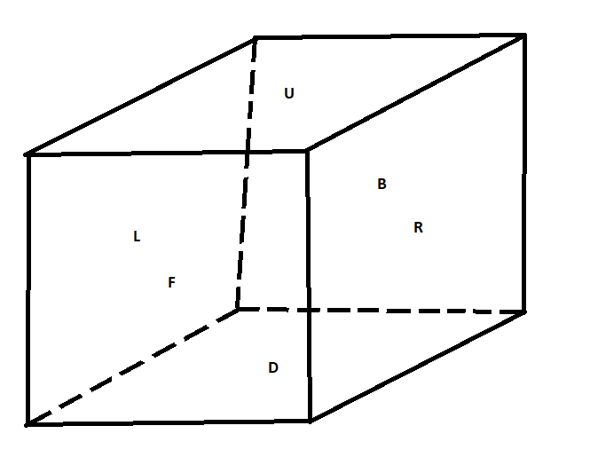

By Spencer T. Parkin
This web-site documents original and well-known solutions to various twisty puzzles that I've found and learned over the years. Here I take a minimalist approach and only give a high-level overview of how I solve each puzzle, and then only go into greater detail where needed, which usually means the end-game of the puzzle, special cases, and parity cases. Also, I don't always take time to diagram or illustrate the net effect of a sequence. This may seem cheap, but the sequence is more important than a diagram as the sequence can be used to discover its affects for yourself. I look on this documentation as notes I can use to get any of these puzzles solved again if ever I forgot how to solve one of them. Take it for whatever it's worth.
For all puzzles that are cubes in the solved state, the following diagram illustrates the naming conventions I will use.
With this diagram in mind, following are my notational conventions.
Left, Right, Uppward, Downward, Forward, and Backward faces which, of course, depend on how you're holding the cube in your hands. The axis referred to by any one of these letters is an outward normal to the associated face. The rotation referred to by any one of these letters is clock-wise about the said normal when it is viewed as pointing toward you.LU=UL and RF=FR.) These, of course, should not be confused with rotation sequences (e.g., LU != L,U.) Also note that the pairs must refer to adjacent faces (e.g., FB makes no sense.) These pairs refer to clock-wise rotations about the associated axes. To cut back on letters, conventions for a particular puzzle may be used (e.g., W=UL; X=UR; Y=UF; Z=UB.)UFR=FRU.) These too refer to clock-wise rotations about the associated axes.i appended to a letter, pair or triple (e.g., Ri or FRUi) will denote a counter-clock-wise rotation. The amount of rotation is usually the least amount necessary to preserve the shape of the puzzle unless otherwise stated.X=Y,R together with Y=L,U gives us X=L,U,R by substition.2[A,B]=A,B,A,B). The square brackets may be dropped for sequences of unit length (e.g., 2[A]=2A=A,A).2{A,B}=2A,2B). The curly brackets may be dropped for sequences of unit length (e.g., 2{A}=2A=A,A).(A,B)i,C=Bi,Ai,C.)i may also be appended to square and curly braces.
2[A,3{B,C}i]=A,Ci,Ci,Ci,Bi,Bi,Bi,A,Ci,Ci,Ci,Bi,Bi,Bi.)R,|U|,R=R,B.) Here, the |U| means rotate the entire puzzle clock-wise with respect to the axis associated with the U face. Since the face symbols don't mean anything without an orientation of the puzzle (i.e., they're inherently contextual), a rotation of the entire puzzle changes the meaning of the symbols. In the example just given, R became B.A~ to mean the reverse of sequence A. So if A=L,U,R, then A~=R,U,L.
!R to mean that we perform R, but the R face doesn't move; the rest of the puzzle moves. To be specific, !R=|Ri|,R.
Finally, here are the puzzles that I have thus far to-date documented, or plan to document.
No twisty puzzle page would be complete without addressing, in at least some degree, some twisty puzzle theory; group theory, to be precise. Permutation groups can be used to model many twisty puzzles, even if it's not immediately obvious how this can be done. (e.g., it is not immediately obvious how one can come up with the generators for the Mixup Cube, but it can be done.) Still other puzzles such as the Square 1 or Latch Cube may fall a bit outside of group theory as they require a slightly different mathematical structure, such as perhaps a groupoid, to be fully realized mathematically. If one, however, were to consider all mutations of the puzzle that preserve its present shape, or that preserve the cube shape, or some other kind of property, then group theory becomes, once again, immediately applicable and useful in an analysis of puzzles such as the Square 1 and the Latch Cube.
All that said, we must start with the common theme of all twisty puzzles in terms of group theory, which is to state the problem every such puzzle presents the puzzler in terms of that theory, which is to find, given any elements of the group representing the puzzle, a factorization of that element in terms of a given set of generators of that group. The generators we're given for the Rubik's cube, for example, are the 6 faces. Interestingly, it can be shown that if one of these faces were locked, the remaining 5 would still generate the entire group.
An interesting group-theoretic strategy to solving twisty puzzles is the idea of working within a homomorphic image of the puzzle. Notice that all sequences of the Rubik's cube that change cubie orientation, but not position, forms a normal subgroup. Factoring this subgroup out, we get a group representing all the ways that the cubies can be moved across the cube, regardless of orientation. When you solve cubie positions first, then orientation, you're first working in a homomorphic image, and then in a normal subgroup, of the overall group.
Next comes a treatment of conjugates and commutators. The group elements can be said to act on the stickers of a twisty puzzle, and it can be shown that the total action of a commutator is proportional to how much the pair of elements taken in the commutator product commute with one another. At the end-game of a solve, the most useful commutators are those made between elements that almost commute, but don't, as these will act as little on the nearly-solved puzzle as possible. Using set theory, it is not hard to show that the minimum action of two given group elements is always less than the action of a commutator product of those two elements. It follows that a useful trick is to take commutators in the commutator product with other elements or other commutators to further reduce the impact (or action) of a group element. In other words, you can apply the commutator product recursively to find sequences that are more and more surgical.
While commutators narrow action, conjugates direct the action to a desired area of the puzzle. In common cubist parlance, this is achieved through the use of a setup move. Once setup, a useful move sequences is performed, and then the setup move is undone. The net effect is simply a shift or translation of the action of the said useful sequence to some other area of the puzzle. With practice, long setup moves become easier to unwind. In theory, you could forgo undoing a setup, and just go on with other conjugates, and once you're readying, unwind all the setups (in the right order!) In practice, this doesn't make sense, but maybe a computer would do it.
Now what about parity? What is it? I believe the nature of parity, in terms of group theory, may be described in terms of even and odd permutations. (The parity of a permutation is the parity of the number of transpositions it can be decomposed into; which, it has been shown, is consistent across all ways the permutation can be factored as such.) Now, in any group of a permutations, the even permutations of that group form a subgroup. If the state of your puzzle is an odd permutation in that group, then no matter how many even permutations you apply to the puzzle, and no matter how close it may get to a solved state, it will never get to that solved state, because you're jumping around in a coset that does not contain the identity element. The trick, then, to solving the parity is to apply any odd permutation, and then continue on with only even permutations. Any will do, but usually one is chosen that will minimize the remaining amount of work that must done.
I became obsessed with twisty puzzles after finally getting around to investigating the Rubik's cube, which had been on my list of things to do for many years. Had I known how fun it was, I would have done so much sooner. Ironically, I had written software that simulated a Rubik's cube long before ever knowing how to solve one. I then began collecting all sorts of twisty puzzles. Having been spoon-fed a solution to the Rubik's cube, I insisted on finding my own solutions to each new twisty puzzle I decided to buy. Only then would I go compare my solution with the way other people got the puzzle solved. My final solution would then take the best of what other people did and what I could come up with on my own.
They're all just permutation groups, sure, but there is still so much variety in stratagy and thinking that is stimulated by various twisty puzzles that I continue to enjoy them. I have since written generalized, OpenGL-based software that can simulate a variety of 3-dimensional twisty puzzles. For exampel, here. I have also written a 2-dimensional twisty puzzle WebGL-based web-app that can be found here. Some of the puzzles are easy, some are terribly difficult.